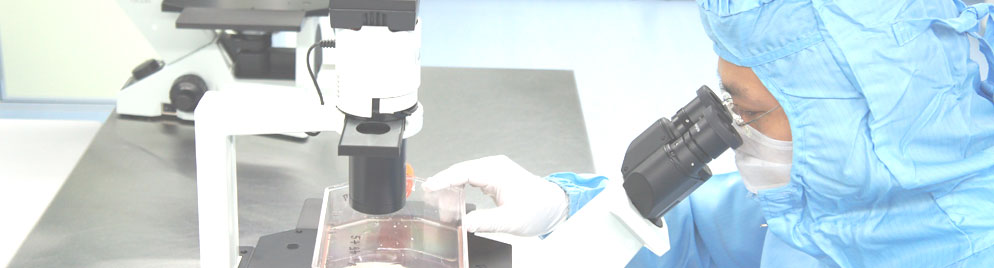

TOP
設置者・認定証
審査等業務に関する規定
審査等業務の過程に関する記録
委員の名簿
再生医療等の安全性の確保等に関する法律

医療法人社団聖友会 名古屋メディカル・クリニック(名古屋市中区、理事長：内藤 康弘)は、再生医療新法の対応の一環として、「医療法人社団聖友会 名古屋メディカル・クリニック 認定再生医療等委員会」を設置し、今般、東海北陸厚生局管轄下にて第一号の認定を受けました。
設置者・認定証
当委員会は各届出・認可を受けましたので、各届出・認可情報を開示しています。
「再生医療等の安全性の確保等に関する法律」が施行されました
当委員会は各届出・認可を受けましたので、各届出・認可情報を開示しています。
委員の名簿
当委員会の審査委員について
【認定再生医療等委員会の目的】
免疫細胞治療を含む再生医療の実用化をより安全かつ迅速に推進するための法律「再生医療等の安全性の確保等に関する法律」（2014年11月25日施行）に明文化されています認定再生医療等委員会は、再生医療の中で第３種に分類されますがん免疫細胞治療（NK細胞治療、樹状細胞ワクチン治療、ガンマ・デルタT細胞治療）などの、第３種再生医療の実施提供計画に関する審査・助言を実施する機関です。
ニュース
2015/02/20 当院名古屋メディカル・クリニックの認定再生医療等委員会が東海北陸厚生局より認定を受けました。
更新情報
2015/02/25 ホームページ開設